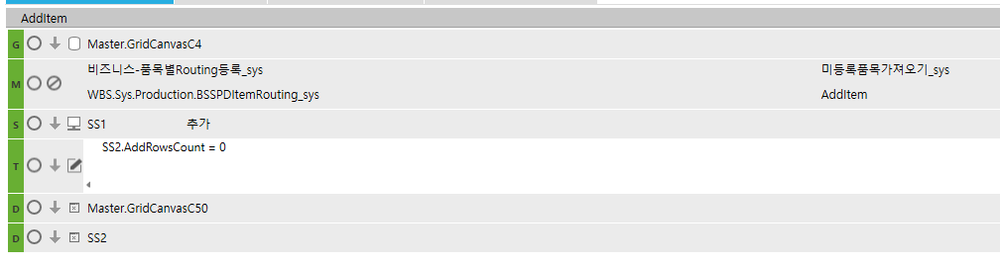

미등록 품목 가져오기
미등록 품목 가져오기
sys_SWPDItemRoutingQuery
상품
버튼 클릭 시, 왼쪽 쉬트에 아직 Routing이 연결안된 품목(제품, 반제품)을 모두 가져와서 나타냅니다.
+. 처음이 아니라 추가로 설정
DROP PROC sys_SWPDNotConnectRoutingQuery
GO
CREATE PROC sys_SWPDNotConnectRoutingQuery
@ServiceSeq INT = 0,
@WorkingTag NVARCHAR(10)= '',
@CompanySeq INT = 1,
@LanguageSeq INT = 1,
@UserSeq INT = 0,
@PgmSeq INT = 0,
@IsTransaction BIT = 0
AS
DECLARE @ItemName NVARCHAR(200),
@ItemNo NVARCHAR(100)
SELECT @ItemName = ISNULL(ItemName,''),
@ItemNo = ISNULL(ItemNo ,'')
FROM #BIZ_IN_DataBlock1
SELECT ISNULL(A.ItemName,'') AS ItemName,
ISNULL(A.ItemNo ,'') AS ItemNo ,
ISNULL(A.Spec ,'') AS Spec
FROM _TDAITem AS A LEFT OUTER JOIN SYS_TPDItemRouting AS B ON A.ItemSeq = B.ItemSeq
WHERE B.CompanySeq IS NULL
AND (@ItemName = '' OR A.ItemName LIKE '%' + @ItemName + '%')
AND (@ItemNo = '' OR A.ItemNo LIKE '%' + @ItemNo + '%')
AND A.AssetSeq IN (SELECT A.AssetSeq
FROM _TDAItemAsset AS A WITH(NOLOCK)
WHERE A.SMAssetGrp IN (6008002,6008004))
AND A.CompanySeq = @CompanySeq
RETURN
